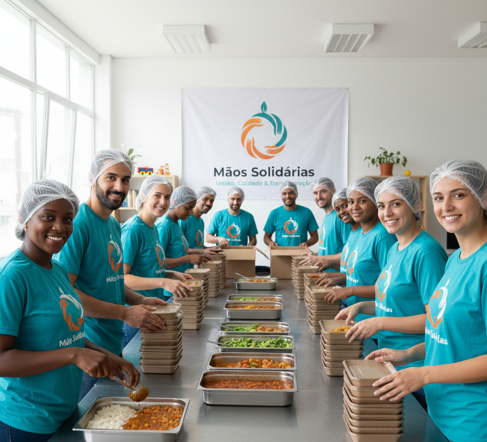

Aqui você encontra informações detalhadas sobre nossos projetos atuais
e como você pode contribuir com doações para apoiar nossa causa. Nossa
missão é levar esperança, dignidade e oportunidades para comunidades
em vulnerabilidade social. Cada projeto foi desenvolvido escutando a
comunidade e respondendo às suas necessidades reais.
Projetos Sociais em Andamento
Todo nosso esforço é direcionado para ações práticas que mudam vidas.
Conheça nossas principais frentes de atuação e o impacto que cada uma
gera:
🍽️ Projeto "Cozinha Solidária"

Distribuímos refeições nutritivas diariamente para pessoas em
situação de rua e famílias em extrema pobreza. Nosso objetivo é
garantir a segurança alimentar e levar um pouco de dignidade a
quem mais precisa.
Impacto: 500+ refeições distribuídas mensalmente
| Frequência: Segunda a sexta |
Voluntários: 25 pessoas engajadas
Oferecemos aulas de reforço escolar, oficinas culturais e
atividades de lazer para crianças e adolescentes de comunidades
carentes. Acreditamos na educação como principal ferramenta de
transformação social e mobilidade.
Impacto: 200+ crianças atendidas |
Disciplinas: Português, Matemática, Inglês e
Artes | Professores: 15 voluntários certificados
Realizamos campanhas gratuitas de saúde com médicos voluntários,
oferecendo consultas, orientações preventivas e distribuição de
medicamentos básicos. Focamos em educação em saúde e prevenção de
doenças.
Impacto: 300+ pessoas atendidas por mês |
Especialidades: Clínica Geral, Odontologia,
Psicologia | Frequência: Sábados e domingos
Acompanhamento integral de bebês e crianças pequenas de 0 a 3
anos, com foco em desenvolvimento saudável, nutrição adequada e
estimulação cognitiva. Também oferecemos orientação às mães e
cuidadores.
Impacto: 80+ crianças e 60+ mães acompanhadas |
Atividades: Estimulação, nutricional, psicológica
| Equipe: Pediatra, nutricionista e psicóloga
As histórias reais de pessoas transformadas por nossos projetos são o
maior combustível para continuarmos nosso trabalho:
"A refeição oferecida pela Cozinha Solidária me deu forças para
continuar lutando. Agora tenho esperança de um futuro melhor."
"Graças ao Saber para Crescer, minha filha conseguiu passar de ano
e agora quer ser professora. Ela estuda com afinco todos os dias!"
Como ser um Voluntário?
O seu tempo é um dos bens mais preciosos que podemos receber. Nossos
voluntários são o coração da "Mãos Solidárias". Se você deseja ajudar
em nossos projetos, venha conosco! Oferecemos:
Formação: Treinamentos específicos para cada
projeto
Suporte: Coordenadores dedicados para orientação
contínua
Comunidade: Rede de voluntários engajados e
inspiradores
Impacto Visível: Acompanhamento dos resultados
gerados
Flexibilidade: Escolha dia, hora e projeto de seu
interesse
Vagas abertas para: Professores, médicos,
nutricionistas, psicólogos, cozinheiros, educadores sociais e pessoas
com disposição para aprender!
Para manter nossos projetos funcionando e expandindo o alcance de
nossa atuação, dependemos 100% de doações de pessoas como você. Sua
contribuição, por menor que pareça, é vital e faz a diferença concreta
na vida de quem mais precisa.
Onde sua doação vai parar:
70% - Projetos sociais e beneficiários diretos
20% - Gestão administrativa e funcionários
10% - Capacitação de voluntários e pesquisa social
💡 Saiba mais: Todas as doações geram recibo fiscal
e são dedutíveis no IR (consulte seu contador). Somos OSCIP e você
pode acompanhar o impacto de sua doação através de relatórios
trimestrais enviados para seu email.